Mauth Studio features
Maths assessment authoring, end to end.
Design the paper, write the mathematics, build the diagrams, complete the solutions, and check the printed pages in one place.

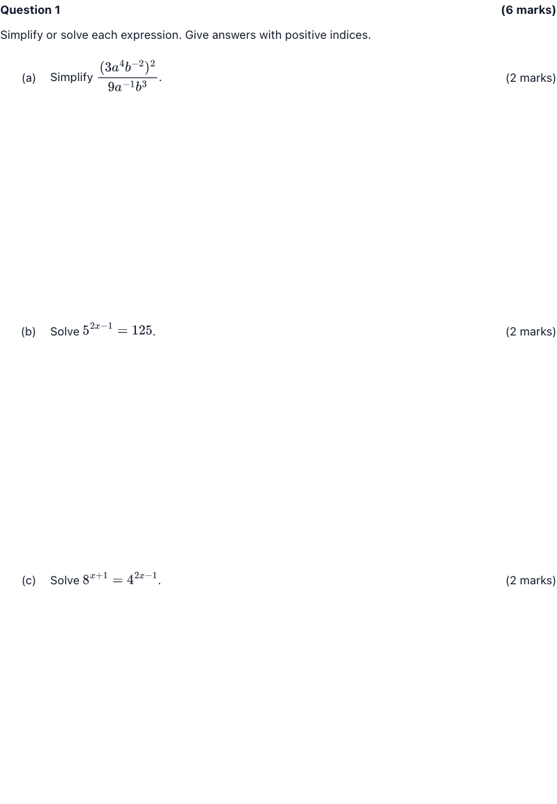
Structure and marks
The paper keeps count.
Allocate marks to questions and parts. Mauth totals them for the relevant title page, keeps the labels consistent, and carries the same structure into Student and Solutions copies.
Mathematical typesetting
LaTeX-quality mathematics.
Write familiar LaTeX notation for fractions, powers, matrices, calculus, probability, and more. Mauth renders it as sharp SVG mathematics in the editor, on the page, and in print.
Diagrams and graphs
Built for mathematical pictures.
Use editable, structured diagrams instead of rebuilding every graph in another application.
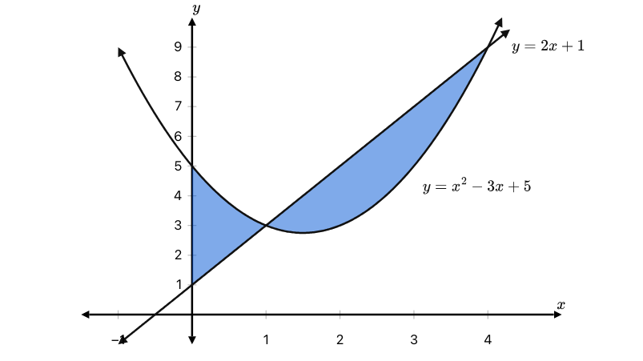
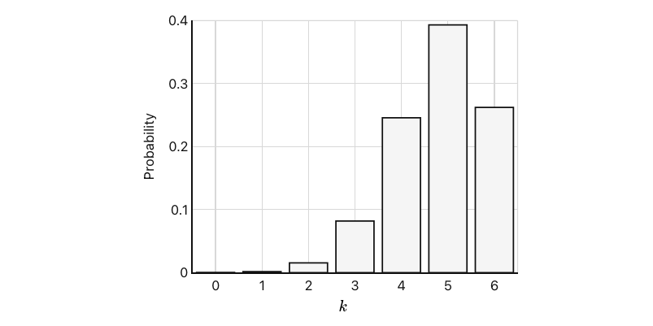
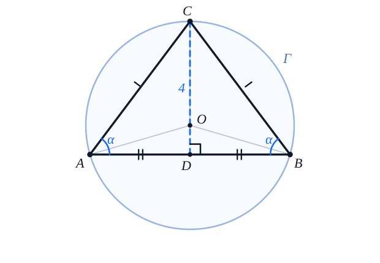
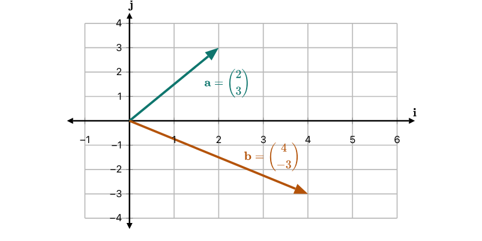
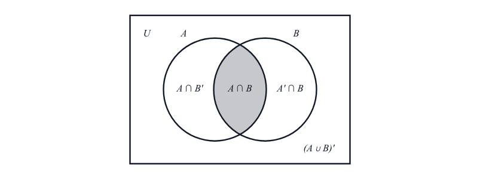
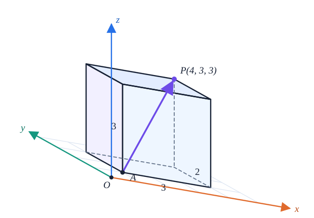
Embedded solutions
Answers appear where students would write them.
Complete tables, circle choices, draw solution-only graph features, and add working directly to the Teacher layer. Shared content stays black; only the answer appears in solution blue.
Document templates
The right page for the job.
Start with a school test, formal exam, worksheet, mathematics notes, or an investigation with its linked teacher rubric.
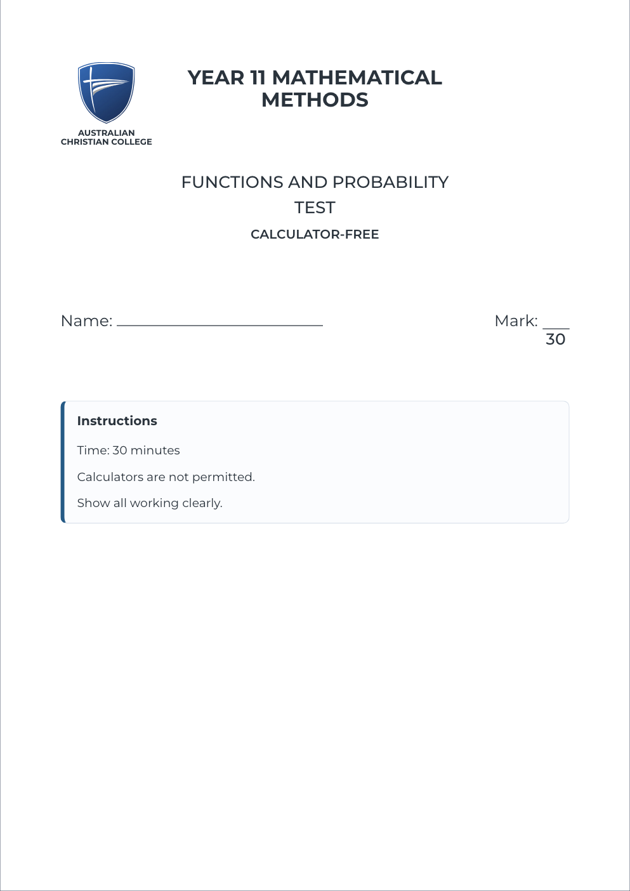
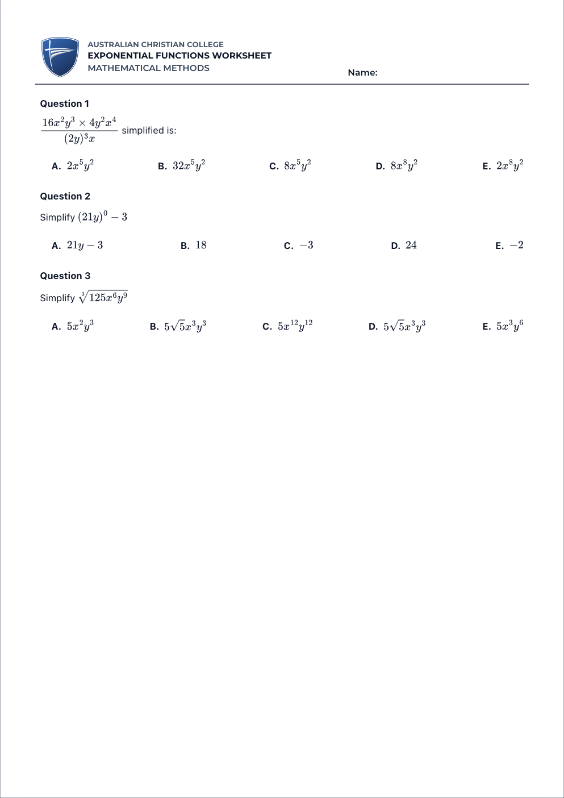
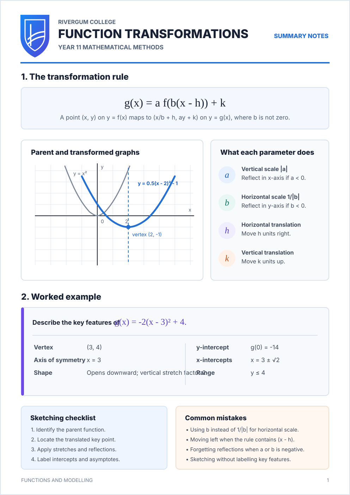
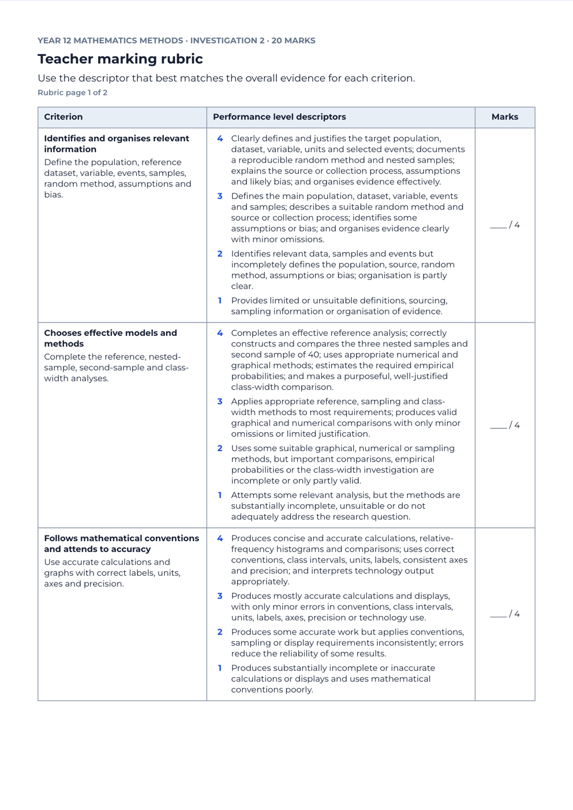
Version 0.1.3 · Apple Silicon · Signed and notarized
Build your next assessment in Mauth.
Use it as a standalone editor, or connect Codex or Claude when you want structured authoring help.
Download for Apple Silicon